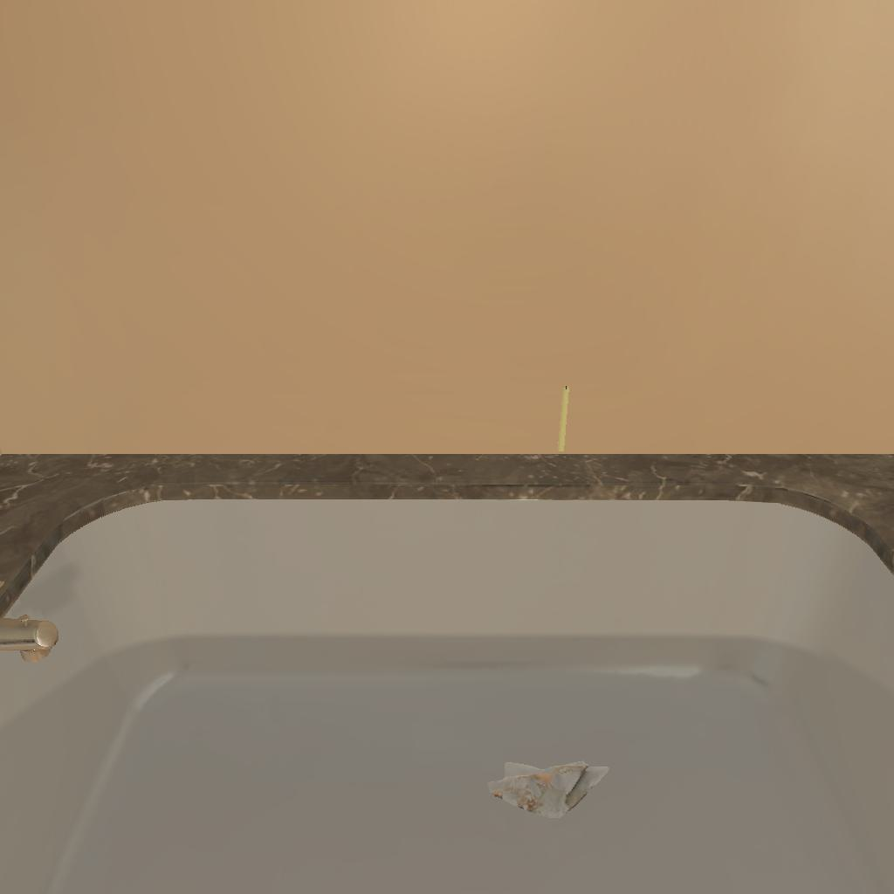

---------------------------------------------------------task: 11---------------------------------------------------------
--------------------------------------------------------------------------------------------------------------------------------------------------------------------
--------------------------------------------------------------------------------------------------------------------------------------------------------------------
Step:--------------------------------------------------------------------------12-------------------------------------------------------------------------------
----------------------------------------
VLM Prompt:
Image1:
Image2:
**Instruction**
1. Analyze the provided images to identify all visible household objects and compare the difference between images (e.h. whether the object is opened or not and taken on hand or not), focusing on those relevant to the task description "clean some soapbar and put it in bathtubbasin."
2. Use the analysis of images and the task hint "The agent must find an object of the desired type, pick it up, go to a sink or a basin, clean the object with a sink or basin, and then find the correct location to place it and put it down there. The agent does not need to use soap bottle or faucet to clean the object, and the agent just needs to do action that is "clean the object with the sink or sink basin"." to answer the question: what is the most reasonable action in the choices for the task description "clean some soapbar and put it in bathtubbasin"?
3. Decide and write the answer using the template: The answer is: (i): , where i is the real number. If there is no desired object in images, search every place based on **Initial Observation** to find the object. And if no one is exactly correct, choose a similar answer.
**Initial Observation**
You are in the middle of a room. Looking quickly around you, you can see bathtub (1), bathtubbasin (1), toilet (1), cabinet (1-2), countertop (1), sink (1), sinkbasin (1), garbagecan (1)
**Answer Choices**
(1): go to bathtub 1
(2): go to toilet 1
(3): go to cabinet 1
(4): go to countertop 1
(5): go to sink 1
(6): go to sinkbasin 1
(7): go to cabinet 2
(8): go to garbagecan 1
(9): take cloth 2 from bathtubbasin 1
(10): take faucet 3 from bathtubbasin 1
(11): take candle 3 from bathtubbasin 1
**Answer**
Let's think step by step by following the instructions.
----------------------------------------
----------------------------------------
Original Response:
- First, we analyze the images provided. In both images, we can see a bathtub with a bathtub basin, and inside the basin, there is a soapbar. There are no other visible objects relevant to the task description.
- Based on the task hint, the agent needs to clean the soapbar and place it in the bathtub basin. In the images, the soapbar is already in the bathtub basin, so we can assume that the agent has already placed it there. The next step would be to clean it.
- Since the agent does not need to use a soap bottle or faucet to clean the object, the most reasonable action would be to "clean the object with the sink or sink basin." However, there is no option provided for cleaning the object, only options for going to different locations or taking objects from the bathtub basin.
- Given the answer choices, the closest action to cleaning the soapbar in the bathtub basin is to go to the sink or sink basin. Since the soapbar is already in the bathtub basin, going to the sink basin would be the most logical choice to clean the soapbar.
The answer is: (6): go to sinkbasin 1.
----------------------------------------
----------------------------------------
>>> Refine Original VLM Response and Get Pure Action: go to sinkbasin 1
----------------------------------------
-----------------------------------------------------------------
Running time: 9.472283363342285 seconds
Total Money: 5.037540000000003
-----------------------------------------------------------------
-----------------------------------------------------------------
Text Observation:You arrive at loc 6. On the sinkbasin 1, you see a faucet 1, and a faucet 2.
-----------------------------------------------------------------
UNSUCCEED